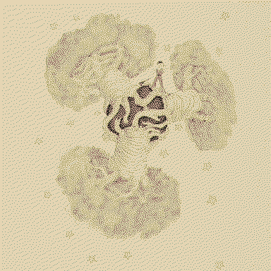
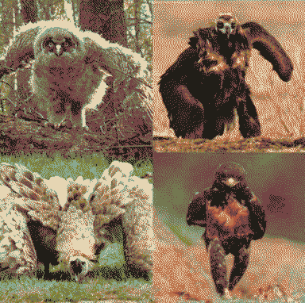

radiobirdman
With centuries of extended life, he’s become a lossy amalgamation of a lot of the worst archists of history. He remains as the last prince of dynasties of exploitation. The maladaptive simplifier, the soothsayer, the desensitiser. He’s lived hundreds of lives as a wandering spirit, inhabiting many bodies, mostly machines that are incompatible with housing a human soul in the long-term. In each life he’s left behind memories; he’s forgotten his motivations, his mistakes and his cruelest past decisions, being whittled down to just a drive to last.
maybe he just wants to be the witness to ends of worlds. does he want to be LUCA to post-humanity?
Val to the forgotten-god-kings: you are working on becoming uncrustable, i am working on becoming the crustiest, we are not the same.
Val’s been an eidolon for centuries before anyone else, alone and desensitised. He throws his bodies off of cliffs to feel real. There’s this moment of timelost bliss at that point of undeath he’s forever chasing- when he loses the memories imprinted in the previous body.
Cult Of The Cold Sun Val’s interpretation of the red star dream is that it’s Sol as a red giant - so he wants to live to witness what Monolith will become when their star goes cold.
To be the architect of Utopaea, he will do whatever it takes to reform the planet in the image of Earth, but over generations the blue planet has fallen into myth. He needs a naive, hopeful child to play the hero. Rain is not the first lost child that he has ‘mentored’ (manipulated) into hoping for a reformed Mars - he’s made so many sacrifices that he’s willingly forgotten. At present, he’s left himself with only the memories of how to piece together a body from key locations of pre-collapse eidolon research - for Rain to inhabit when they’re inevitably martyred. He raised Eris and Enyo (and maybe others?) as his own children, telling them stories of Earth from a young age in the hope that their dreams would help reshape Mars.
“There’s a tombstone where your headboard used to be.” They tell him every night before sleep, every night before he dreams big and becomes complete. Then he sees himself floating high above the certainty of his feet, meets some gutless worm, seeking a free ride inside the stomach of a whale. He can live without air for several days, he says. He says, he knows things, this man, he says. He says he wouldn’t wait for the light or the dark to fade, he says he would mouth on the mouths of the damned elites.
prince
 
lighthouse keeper
An auspex? bird watcher/diviner.
its petrifying light is pointed at Brigantine, keeping it stuck
Eidolons by Walt Whitman
I met a seer,
Passing the hues and objects of the world,
The fields of art and learning, pleasure, sense,
To glean eidolons.
Put in thy chants said he,
No more the puzzling hour nor day, nor segments, parts, put in,
Put first before the rest as light for all and entrance-song of all,
That of eidolons.
Ever the dim beginning,
Ever the growth, the rounding of the circle,
Ever the summit and the merge at last, (to surely start again,)
Eidolons! eidolons!
Ever the mutable,
Ever materials, changing, crumbling, re-cohering,
Ever the ateliers, the factories divine,
Issuing eidolons.
Lo, I or you,
Or woman, man, or state, known or unknown,
We seeming solid wealth, strength, beauty build,
But really build eidolons.
The ostent evanescent,
The substance of an artist’s mood or savan’s studies long,
Or warrior’s, martyr’s, hero’s toils,
To fashion his eidolon.
Of every human life,
(The units gather’d, posted, not a thought, emotion, deed, left out,)
The whole or large or small summ’d, added up,
In its eidolon.
The old, old urge,
Based on the ancient pinnacles, lo, newer, higher pinnacles,
From science and the modern still impell’d,
The old, old urge, eidolons.
The present now and here,
America’s busy, teeming, intricate whirl,
Of aggregate and segregate for only thence releasing,
To-day’s eidolons.
These with the past,
Of vanish’d lands, of all the reigns of kings across the sea,
Old conquerors, old campaigns, old sailors’ voyages,
Joining eidolons.
Densities, growth, facades,
Strata of mountains, soils, rocks, giant trees,
Far-born, far-dying, living long, to leave,
Eidolons everlasting.
Exalte, rapt, ecstatic,
The visible but their womb of birth,
Of orbic tendencies to shape and shape and shape,
The mighty earth-eidolon.
All space, all time,
(The stars, the terrible perturbations of the suns,
Swelling, collapsing, ending, serving their longer, shorter use,)
Fill’d with eidolons only.
The noiseless myriads,
The infinite oceans where the rivers empty,
The separate countless free identities, like eyesight,
The true realities, eidolons.
Not this the world,
Nor these the universes, they the universes,
Purport and end, ever the permanent life of life,
Eidolons, eidolons.
Beyond thy lectures learn’d professor,
Beyond thy telescope or spectroscope observer keen, beyond all mathematics,
Beyond the doctor’s surgery, anatomy, beyond the chemist with his chemistry,
The entities of entities, eidolons.
Unfix’d yet fix’d,
Ever shall be, ever have been and are,
Sweeping the present to the infinite future,
Eidolons, eidolons, eidolons.
The prophet and the bard,
Shall yet maintain themselves, in higher stages yet,
Shall mediate to the Modern, to Democracy, interpret yet to them,
God and eidolons.
And thee my soul,
Joys, ceaseless exercises, exaltations,
Thy yearning amply fed at last, prepared to meet,
Thy mates, eidolons.
Thy body permanent,
The body lurking there within thy body,
The only purport of the form thou art, the real I myself,
An image, an eidolon.
Thy very songs not in thy songs,
No special strains to sing, none for itself,
But from the whole resulting, rising at last and floating,
A round full-orb’d eidolon.